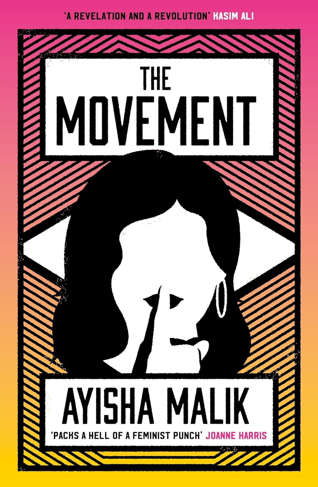
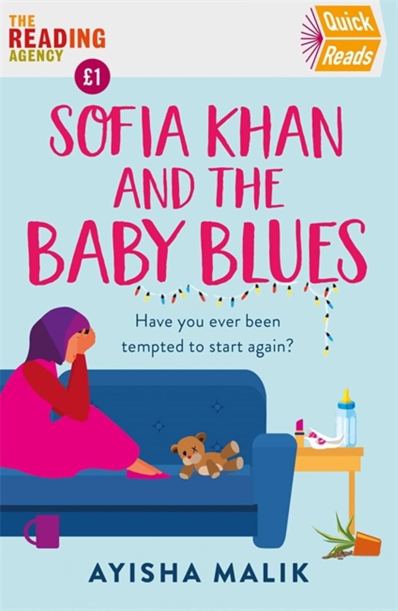
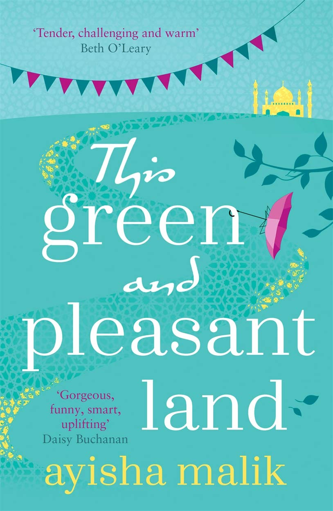
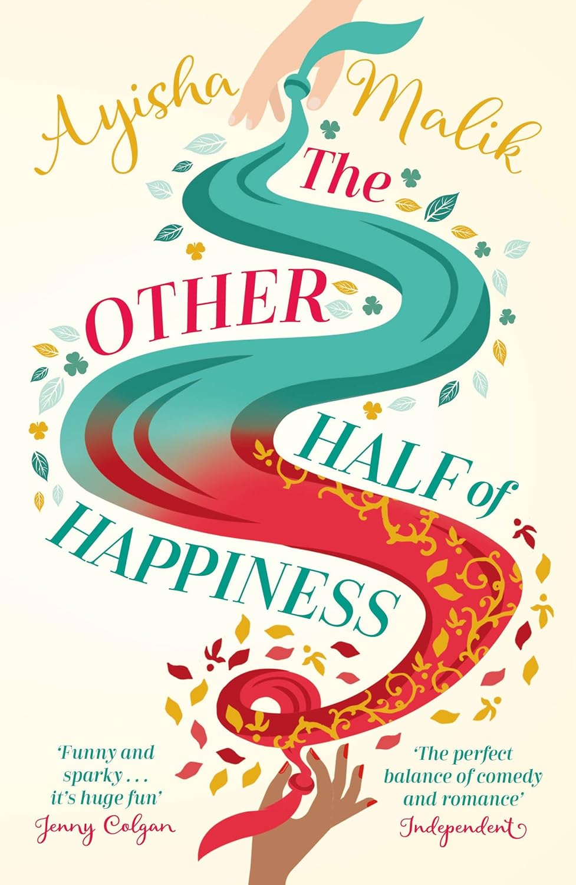
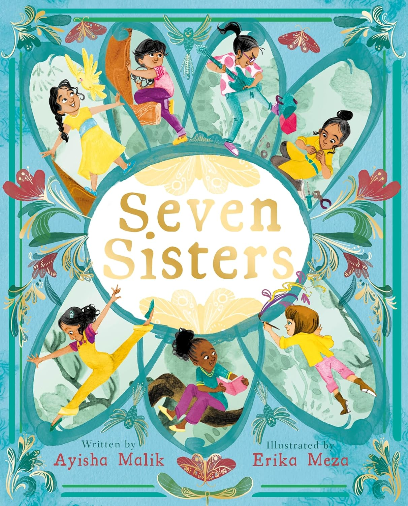
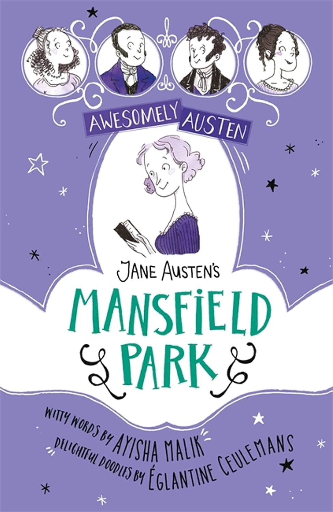

Ayisha Malik
Ayisha Malik is author of critically acclaimed novels Sofia Khan is Not Obliged, The Other Half of Happiness, This Green and Pleasant Land and The Movement. She was a WHSmith Fresh Talent Pick and Sofia Khan was a London CityReads choice. She has contributed to several anthologies, including the Sunday Times bestselling Conversations in Love. Her children's books include Seven Sisters and a re-telling of Jane Austen's Mansfield Park.
Malik is winner of The Diversity Book Awards and has been shortlisted for the Asian Women of Achievement Award, Marie Claire's Future Shapers Awards, h100's Awards for Publishing and Writing, and is also recipient of the Society of Authors' Travelling Scholarship. Sofia Khan is not Obliged and The Movement are optioned for television.
Malik has been a creative writing lecturer at Winchester University. She is part of the Professional Writing Academy team and has led fiction courses for Faber Academy and Curtis Brown Creative. She regularly teaches writing workshops around the country and offers one-to-one mentoring.
The Collection
Adult Fiction

The Movement
'Original, clever, insightful and packs a hell of a feminist punch. I loved it'
Joanne Harris
'Dazzling, clever and mind-blowingly creative . . . This isn't just a book, it's a world-changing conversation' — Lucy Vine
'A stunning, monumental novel, which will make you think about who is heard, who isn't — and why not' — Inga Vesper
Optioned for television.
Sofia Khan and the Baby Blues
'Fun, Fresh and Funny'
Mhairi McFarlane
'Fun, feisty and addictive' — Irish Examiner


This Green and Pleasant Land
'Wise, warm-hearted novel'
Sunday Times
'Sublimely witty and touching' — Jonathan Coe
'A modern comedy of manners . . . Malik's great gift is to present seemingly insoluble issues of faith and intolerance in a light, accessible manner' — Guardian
'This wonderful novel will make you laugh, make you cry and leave a mark on you long after you've finished reading it' — Sarah Shaffi
2015 & 2017 — A Duology
The Sofia Khan Series

Sofia Khan is Not Obliged
Optioned for television.

The Other Half of Happiness
'Snort-diet-Coke-out-of-your-nostrils funny'
Red Magazine
'Feisty, funny and relatable — the feminist romantic comedy you've been waiting for'
Elle Magazine
'Move over Bridget Jones — there's a new heroine charting her romantic disasters'
Sunday Mirror
'A courageous, revealing, fiendishly funny and important book. Genuinely ground-breaking'
Vaseem Khan
The Settlers
Details to follow — sign up to Literary Letters below to be the first to hear.
Children's Books
For Young Readers

Seven Sisters
Mansfield Park
A retelling of Jane Austen's classic.

Literary Letters
Join Ayisha's private mailing list for exclusive writing tips, early book announcements, and monthly reflections on the craft of storytelling.
No spam, just literature. Unsubscribe anytime.